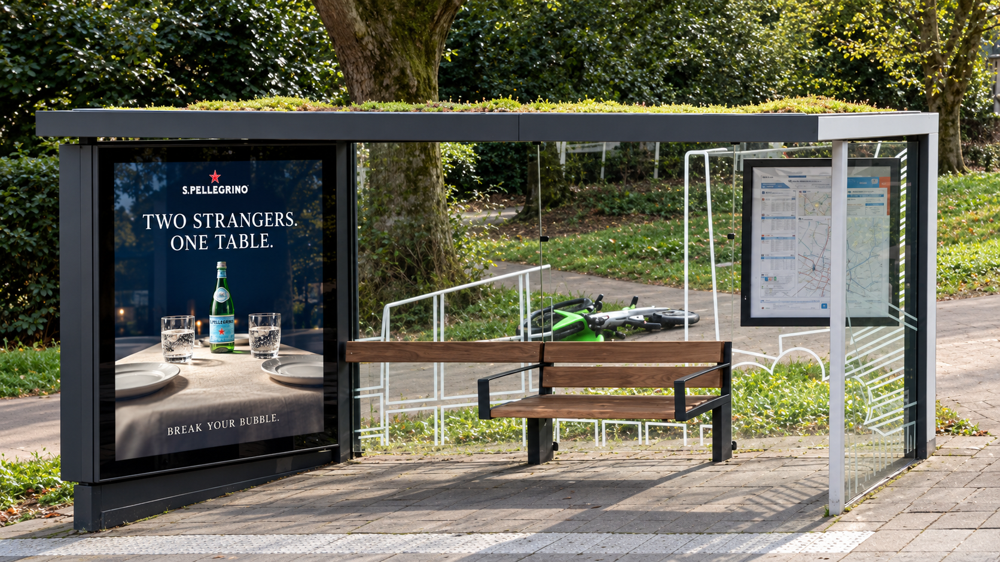

★S.PELLEGRINO
02 — The Bubble Stop
Same city. Different worlds.

★S.PELLEGRINO

?
Someone elseis waiting too.
JIJ · HALTE AANDER · HALTE B
Zwaai even naar de overkant.
Jouw plek
aan tafel
JIJ · LOKALE CAMERAaan tafel
Different worlds. One moment.
QR-CODE
Link nog te koppelen
Link nog te koppelen